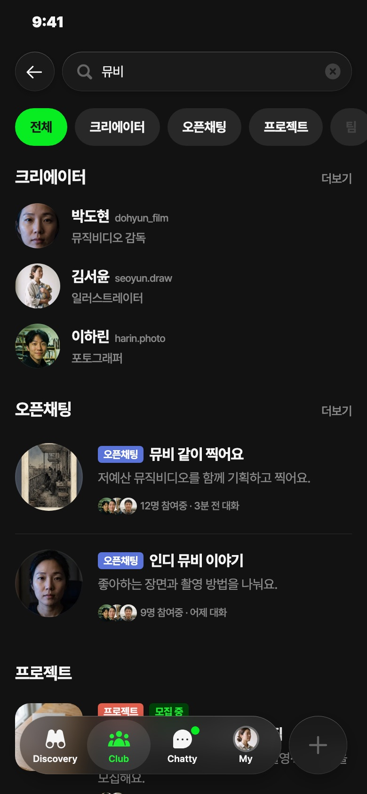
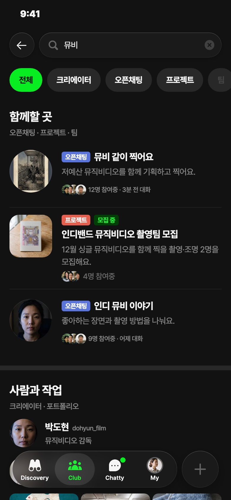
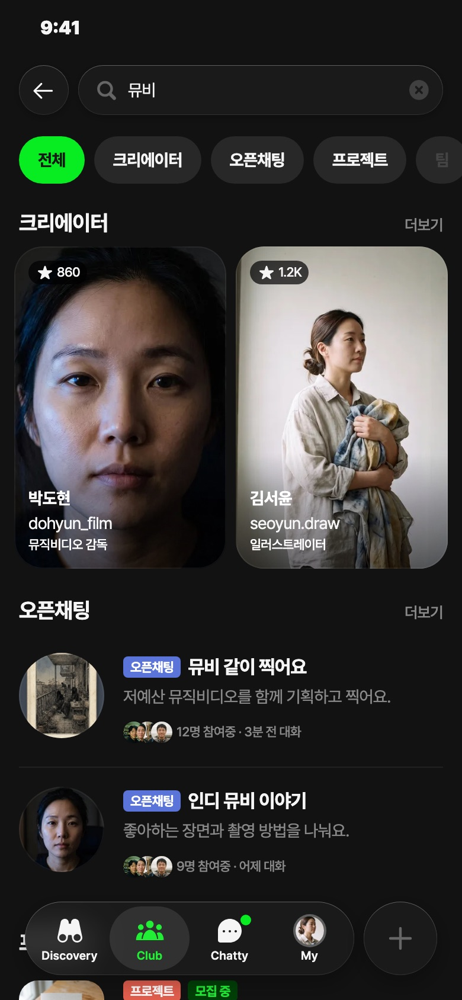
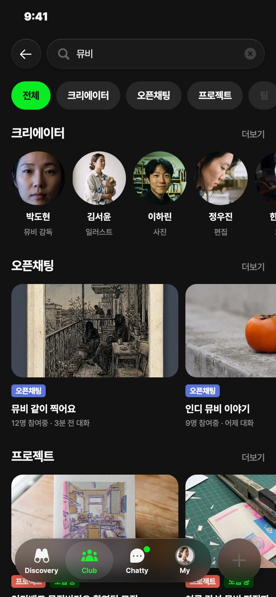
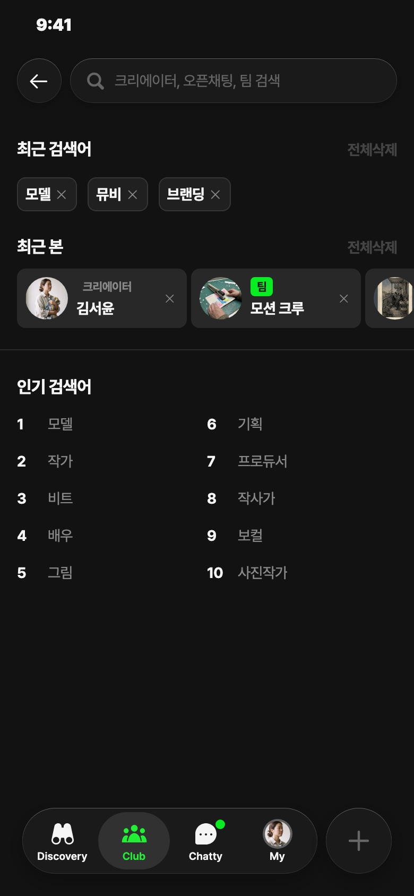
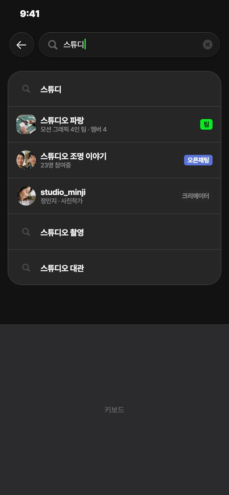
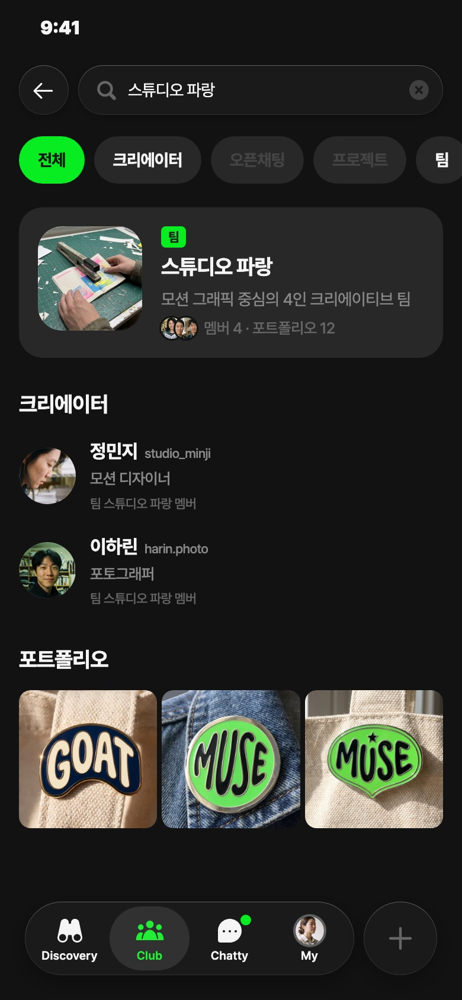
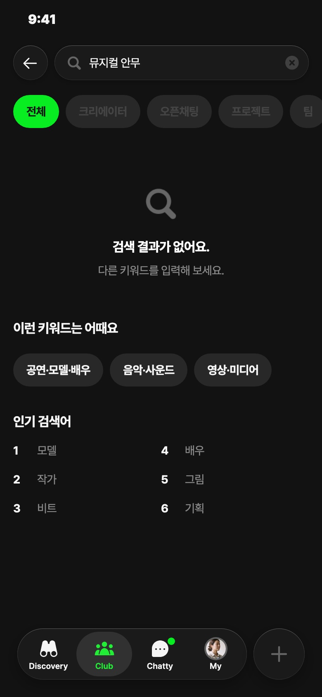

클럽 검색 시안
클럽 돋보기로 「뮤비」를 검색했을 때의 결과 화면 4안과, 검색 전후 상황 4장면입니다. 모두 크리에이터클럽 정본 앱의 실제 부품(검색바·칩·오픈채팅 줄·클럽 소개 줄·크리에이터 카드)으로 조립했습니다.
결과 화면 4안
첫 화면 그대로 보이고, 「아래까지 보기」를 누르면 스크롤 끝까지 보입니다.

A1 · 종류별 칸크리에이터 → 오픈채팅 → 프로젝트 → 포트폴리오. 크리에이터는 한 줄씩이라 한 화면에 종류가 가장 많이 보여요.기본 추천

G · 함께할 곳 먼저오픈채팅·프로젝트·팀을 「함께할 곳」으로 묶어 위로, 사람과 작업물은 아래로. 클럽에서 들어온 사람 기준.클럽 성격이 가장 강함

F · 사람은 사진 카드로지금 파인더의 크리에이터 카드를 그대로 두 장. 사람이 눈에 띄지만 첫 화면을 거의 다 차지해요.

H · 줄마다 옆으로 넘김종류마다 한 줄씩 옆으로 넘겨요. 짧게 많이 훑기 좋지만, 결과가 1~2개면 줄이 비어 보여요.
상황별 4장면
결과 화면 안과 상관없이 같이 쓰는 화면입니다.

① 검색 전「최근 본 크리에이터」를 「최근 본」으로 바꿔 팀·오픈채팅도 다시 찾아가게 했어요.

② 입력 중이름이 맞는 팀·오픈채팅·크리에이터가 종류 표시와 함께 바로 나와요. 누르면 바로 그 화면으로.

③ 이름이 딱 맞을 때팀 이름을 정확히 치면 그 팀을 맨 위에 크게. 멤버는 「팀 스튜디오 파랑 멤버」라는 이유와 함께.

④ 결과 없음지금 문구 그대로 두고, 아래에 비슷한 카테고리와 인기 검색어로 다음 길을 줘요.
시안에서 새로 알게 된 것 — 칩 6개(전체·크리에이터·오픈채팅·프로젝트·팀·포트폴리오)는 한 화면 폭에 다 들어가지 않아 옆으로 넘겨야 합니다. 「포트폴리오」가 늘 화면 밖에 있게 되므로, 칩을 5개로 줄일지(포트폴리오는 크리에이터 안으로) 함께 정해야 합니다.